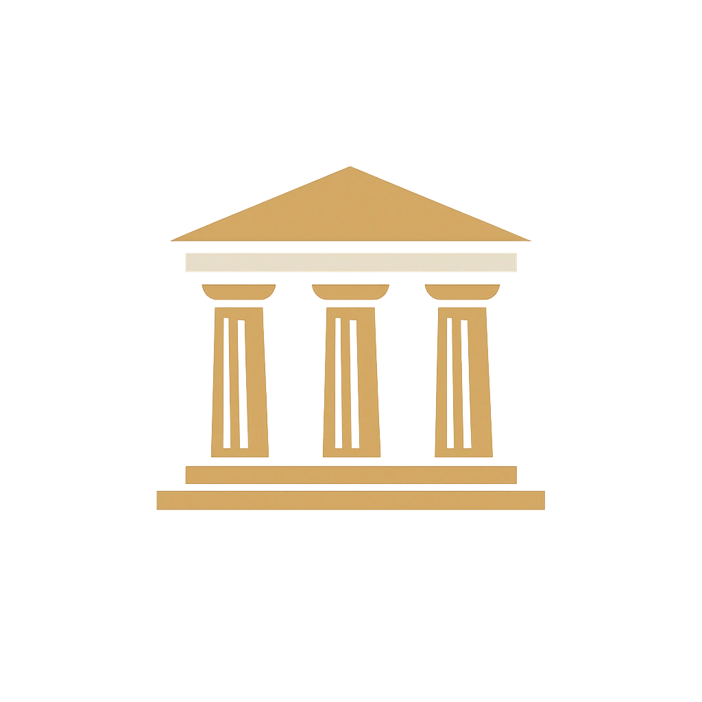
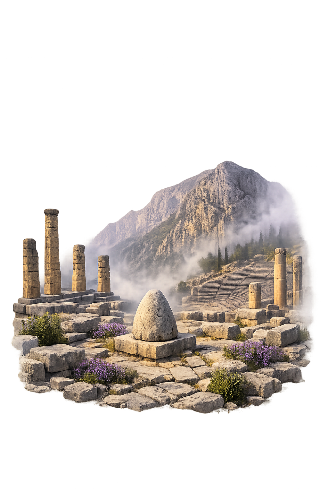

Unicode restoration and ASCII comparison
Δελφοί
The name in its original Greek form. Delphoí (Δελφοί) is attested in the source tradition — “Womb (from δελφύς)”. Its aspirated consonants, diphthongs, and acute accents carry the full phonetic and orthographic weight of the source tradition.
delphoi
Reduced to plain delphoi, the name loses everything that made it specific: aspirated consonants, diphthongs, and acute accents. What remains is an ASCII string that machines can parse but that no longer speaks with its original voice.
Delphoí
The Unicode restoration recovers what ASCII flattened. Delphoí restores aspirated consonants, diphthongs, and acute accents, returning the name to its original written dignity. The domain encodes to Punycode, but the browser displays the truth.
Delphoí.com → xn--delpho-8va.com
The non-ASCII characters in Delphoí are encoded while the ASCII remains visible. To the DNS, it is Punycode. To humanity, it is Delphoí.
How Delphoí travels from ancient script to the modern URL
Greek Δελφοί; from δελφύς “womb"; the sanctuary of Apollo at Delphi.
Oracle of Apollo
The Unicode restoration Delphoí preserves Greek stress and length; the ASCII form delphoi loses these features.
How Delphoí was spoken
The domain of Delphoí
In the greek location tradition, Delphoí governed oracle of apollo. The name encodes a sphere of power that shaped ritual, narrative, and social order.
The Pythia spoke Apollo's words from a tripod above the chasm, her ambiguous utterances shaping cities and colonies.
Zeus's eagles met at Delphi, and the omphalos stone marked the place as the navel of the world.
Apollo killed the she-dragon Python and took the epithet Pythios, founding his sanctuary above her corpse.
Every four years Delphi hosted contests of athletics, chariot-racing, and music in honor of Apollo's victory.
Stories of Delphoí
Delphoí sits on the southern slope of Mount Parnassus above the Gulf of Corinth, but in Greek myth it is the axis of the world. Its name was said to come from delphys, 'womb,' because the sanctuary marked the place where Earth gave birth to her greatest oracle. Before Apollo, the site belonged to Earth and the serpent Python; after Apollo, it became the voice through which kings, colonists, and philosophers heard the will of heaven. For centuries Delphi mediated between Greek cities and the divine. Tyrants and democrats alike sought Apollo's guidance; colonies were founded on oracles delivered from the Pythia's tripod. The sanctuary's prestige peaked in the sixth and fifth centuries BCE, when its influence extended from Sicily to the Black Sea, making Delphoi a panhellenic center of law, religion, and diplomacy.
The Homeric Hymn to Apollo tells how the god, born on Delos, crossed the Aegean in search of a place to found his oracle. He came to Delphi, where a vast she-dragon named Python guarded the sacred spring. Apollo drew his bow and killed the monster, whose body fell into a cleft in the rocks. From that cleft rose vapors that would inspire the Pythia, the priestess who spoke Apollo's words to mortals.
The god then established his temple above the chasm and took the epithet Pythios, 'Python-slayer.' Every eight years Delphi celebrated the Septeria, a ritual reenactment of the dragon-slaying in which a young boy burned a hut representing Python's lair. The myth justified Apollo's ownership of the shrine and dramatized the triumph of Olympian order over chthonic power.
Zeus, wishing to find the center of the world, released two eagles from opposite ends of the earth. They met at Delphi, and the spot was marked by the omphalos, a rounded stone said to be the navel of the world. Pausanias saw the stone in the second century CE, covered with fillets and flanked by statues. The omphalos made Delphi the point where the vertical axis of heaven and earth met the horizontal reach of Greek colonies.
This centrality was not merely symbolic. Greek cities consulted Delphi before founding colonies, before declaring wars, and before enacting laws. The Delphic oracle was the closest thing the fragmented Greek world had to a shared court of appeal, and its authority derived from its position at the imagined center of the cosmos.
The most famous oracular consultations became cautionary tales about the ambiguity of divine speech. Croesus of Lydia asked whether he should attack Persia and was told that if he did, he would destroy a great empire. He attacked; the empire destroyed was his own. Oedipus, warned that he would kill his father and marry his mother, fled Corinth to avoid the prophecy and fulfilled it at Thebes. The Delphic god did not lie, but his words required interpretation that mortals often failed to provide.
Even Socrates received a Delphic response. The Pythia told Chaerephon that no one was wiser than Socrates, a pronouncement that set the philosopher on his lifelong quest to understand what the god could mean. Delphi therefore stands not only at the center of the earth but at the center of Greek reflection on knowledge, hubris, and the limits of human understanding.
Every four years Delphi hosted the Pythian Games in honor of Apollo's victory over Python. Founded, according to tradition, in the sixth century BCE, the festival included athletic contests, chariot races, and musical competitions in which players performed on the kithara and aulos. The earliest surviving notated music, the two Delphic Hymns to Apollo (c. 138 BCE), was carved into the sanctuary's south wall. These inscriptions preserve the actual sound of ancient Greek melody, offering modern listeners a rare acoustic bridge to the god whose oracle once spoke from the chasm below.
Names are not merely labels; they are compressed worlds. Delphoí carries within it a greek location understanding of womb (from δελφύς). Unicode restoration returns that world to readable form.
Enter Extended Lore